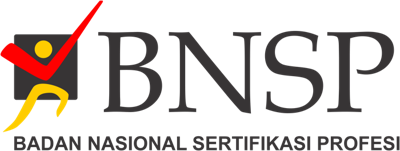

Measure before deciding
Rank the problem before fixing it.
- 495 defects Pareto-ranked by system
- 18% buffer model across 104 stations
- ABC/FSN segmentation of 300 spare parts
Hi, I'm
“Keep it safe. Keep it running. Keep improving.”


About me
I'm a Mechanical Engineer from Universitas Brawijaya and a certified General Occupational Safety & Health Expert (Ahli K3 Umum, BNSP).
Since March 2026 I've worked as a Management Trainee – Operations Engineer at PT Batam Aero Technic (Lion Air Group). I plan maintenance performance for a 400+ aircraft fleet across 64 maintenance stations in Indonesia, Malaysia and Thailand. My work turns work-order, defect and downtime records into backlog, man-hour and availability decisions, and I build the monthly production KPI report for the group Board of Directors.
Alongside the job I've trained in reliability (RCM), workplace safety (Ahli K3 Umum) and planning and inventory control, and before it I built my engineering base in CAD, CNC programming, materials testing and a fuel-system internship. The same question runs through all of it: what does the data say we should do next?

How I work
They show up the same way at work, in training casework and in the lab.
Rank the problem before fixing it.
A KPI is only as good as its source.
Know what the work is waiting for.
Make the safe way the easy way.
What I work with
Experience, education & credentials
Selected work
Each one shows the problem, what I did and what changed. Company figures are my reported results; dashboard text that names stations is blurred.
Mechanical design
3D models and drawing sets from coursework and software training. Select a model to see its drawings.
Proof
Certificates and photos behind the work above. Personal ID numbers on certificates are blurred.
Let's connect
Happy to talk maintenance planning, reliability and engineering data.